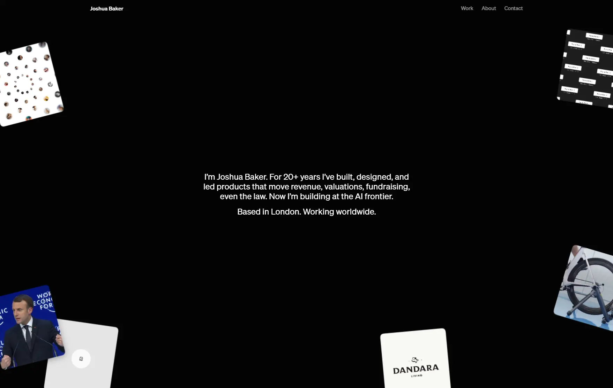

Joshua Baker
- Личные сайты и портфолио
- Разработчик
- Дизайнер
- Минимализм
- Редакционный
- Монохром
- Сайт жив

Что это
Персональное портфолио Джошуа Бейкера, разработчика и дизайнера: тёмная монохромная страница с единственным синим акцентом и видео-карточками по краям вместо крупной типографики. Приватность здесь тоже часть дизайна: без счётчиков, а почта открывается только после проверки. Аккуратный информативный сайт-портфолио лондонского разработчика и дизайнера Джошуа Бейкера.
Что смотреть в первую очередь
Смотреть как пример тихого портфолио: глубина сделана разбросом медиа и точной типографикой, а не крупными заголовками. Отдельно изучить таблицу-индекс проектов и приватностную часть.
Чем интересен
- Анимация собрана без сторонних библиотек: пружинистое движение описано встроенной функцией в стилях, эффекты при прокрутке — современным свойством браузера, а разброс карточек считает собственный скрипт.
- Работы показаны не шестью карточками, а сортируемой таблицей на 145 проектов с 2006 по 2026 год: год, клиент, проект, отрасль, место. Шапка закреплена, сортировка доступна с клавиатуры и озвучивается программой чтения с экрана.
- Почта нигде не опубликована открытым текстом: адрес собирается в браузере из частей и показывается только после проверки Cloudflare Turnstile. Есть запасные варианты — написать в LinkedIn или скопировать адрес при отключённых скриптах.
- Приватность подтверждается разметкой: на семи страницах нет ни одного счётчика и трекера, баннера про cookie нет, а единственный внешний запрос — проверка Turnstile на странице контактов.
- Много внимания доступности: 26 подписей для программ чтения с экрана, 15 правил отключения анимации при «уменьшении движения», счётчик с невидимым для глаза значением и отладочная сетка, которая включается по Alt+G прямо на рабочем сайте.
Паспорт
- Домен
- joshuabaker.com
- Тип сайта
- Портфолио
- Категории
- Личные сайты и портфолио
- Подкатегории
- Разработчик, Дизайнер
- Для кого
- Дизайнерам, Разработчикам, Продуктовым командам
- Стиль
- Минимализм, Редакционный, Монохром
- Язык
- Английский
- Страна
- Великобритания, Лондон
- Автор
- Джошуа Бейкер
- Год
- 2006
- Добавлен в коллекцию
- 30.09.2026
Палитра
-
#030303— 89% кадра -
#0F0F0F— 5% кадра -
#1A1A1A— 2% кадра -
#999999— 1% кадра -
#002BFF— 1% кадра
- Режим
- Тёмная
- Цвет фона
- Нейтральный
Технологии
- Astro v6.1.6
- Astro ClientRouter (View Transitions)
- Tailwind CSS v4
- Cloudflare
- Шрифт Söhne (Klim Type Foundry), самохостинг
- Собственный vanilla JS
- CSS-пружина linear() и animation-timeline
- CSS color(display-p3)